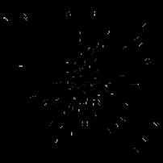
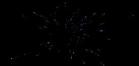

|
|||||
| raptorBASIC+ | rB+
commands |
rB+
tutorials |
working
with rB+ |
contact |
links |
| rB+
tutorials :: 3.2b alternative particle system starfield by Sporadic (Rik's Really
Random Starfield) |
|
 First off - download the project files to accompany the starfield2 tutorial and the project files to accompany the starfield3 tutorial *** Topics touched on in this one: Creation of a starfield effect using particle system - RPARTI Modifying particle properties at set interval to produce random results. Multiple copies of particle buffer with unique palettes as scaled objects in background. *** STARFIELD2 project Extract the ZIP file to your PROJECTS folder and you'll get the "starfield2" project. In this tutorial, Sporadic sets up the particle array and then modifies the angle at which they fire at a given interval. This allows for a truly random-looking starfield. The way he's set up individual values for pixel life and assigned complementary values to the colour decay offers a much more natural-looking effect that gives a decent illusion of depth. Warp speed, Mr. Sulu! There are a couple of trails added to each star by simply calling the same particle effects as previous a few frames later than the originals. *** 
STARFIELD3 project The same projects as STARFIELD2 but with three copies of the particle buffer higher in the list (further back on screen), scaled down slightly, and position-offset from the original to attempt to produce a B-G-R trail behind the stars. There are also slightly faster particles and a wider particle buffer than previously. Maximum warp Mr. Crusher, Engage! Similarly to the SF2, there are also added particle trails of the originals. Effect should look best on SRT screens for obvious reasons. >> back to rB+ tutorials >> |